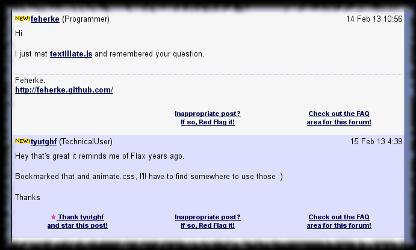
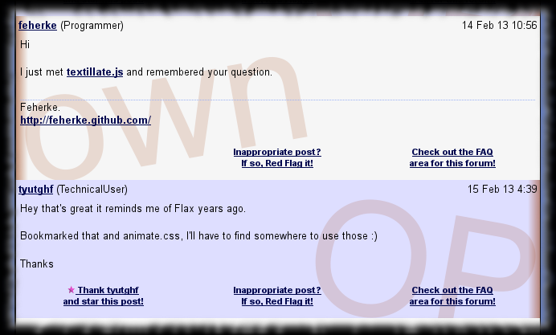

TipMaster - Author Highlight
Improves the TipMaster’s forums, Tek-Tips and Eng-Tips, by adding distinctive decoration to the OP’s and own messages on the thread pages, to ease fast overview.
To have a continuous highlight on lengthy posts, I decided to apply kind of vertical decorations. To not interfere with the post content, I decided to keep decorations on the margin. To avoid having parrot pages, I decided to use only the dark red shade which is now “traditional” in my Greasemonkey scripts.
So in the end highlighted posts get dark red vertical bar on their left margin as follows :
- OP’s post have a dark red bar
outsideon the right side of the post area - own post have a dark red bar
insideon the left side of the post area
Additionally the words “OP” and “own” are added as background, aligned near the same side the dark red bar is displayed.
Screenshot
sample rendering without TipMaster - Author Highlight

sample rendering with TipMaster - Author Highlight

Usage
None. There is nothing interactive.
Configuration
Configuration not really supported.
But you could improve the CSS used to highlight.
Versions
- 0.0 - March 2012
- Initial release.
- 0.1 - March 2012
- Changed the highlight :
- OP posts have gradient bar on right and the word “OP” in background.
- own posts have gradient bar on left and the word “own” in background.
- Changed the highlight :
- 0.2 - June 2012
- Updated according to TipMaster sites’ HTML changes.
- 0.3 - August 2012
@grantmetadata imperative according to Greasemonkey 1.0 API.
Plans
- Think to better highlighting.
Download
You can find the related files on GitHub in my Greasemonkey-script repository’s tipmaster-author-highlight directory :
- TipMaster_-_Author_Highlight.user.js - script